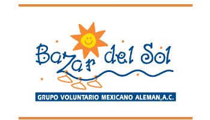

Si te interesa ser parte de este fuerzo, ten la confianza de que será administrado con eficacia y transparencia. Tu Donativo en Efectivo, será destinado a nuestro proyecto dirigido a mejorar la calidad de vida de los niños y niñas en Casa del Sol.
Puedes aportar mensualmente con tu tarjeta de crédito o débito usando cualquier tarjeta VISA, MASTER CARD o AMERICAN EXPRESS.
PayPal cuenta con el sistema más seguro para hacer pagos por internet. Puedes abrir una cuenta o donar con tu tarjeta de crédito sin necesidad de suscribirte a PayPal. Gracias a esta opción podemos ayudar a muchos niños en Casa del Sol. No te toma más de 5 minutos. Tú eliges la cantidad. Sólo haz click y sigue las instrucciones.
Ya que todos nuestros niños son atendidos diariamente en Casa del Sol y son escolarizados en un Jardín de Niños particular, necesitamos el apoyo constante de las personas, y empresas para mejorar su calidad de vida.
Nuestras becas, consiste en apadrinar a un pequeño o pequeña con una donación mensual o anual para apoyar el gasto de la educación, manutención y terapias de un niño o niña que habita Casa del Sol y cubre el costo de su atención en nuestro Centro Educativo Tonatihucali.
El costo de la Beca es de $1,200 pesos mensuales, mismos que podrán ser cargados a tarjeta de crédito o bien, serán recibidos directamente en Casa del Sol.
Con tus aportaciones como Padrino aseguras los servicios necesarios de nuestros niños
Como Padrino, recibirás durante el año:
- Casos de los niños que reciben atención gracias a tu apoyo.
- Boletín electrónico mensual
- Un informe anual en el que se comunican los logros alcanzados y el manejo de los recursos económicos.
- - Recibo deducible de impuestos de tus aportaciones.
- - La oportunidad de convivir con el niño y participar en los eventos del Centro Educativo Tonatiuhcali.
Tenemos una lista de artículos y alimentos que requerimos para nuestra asociación y que puedes donarnos, principalmente:
- Ropa nueva o usada, calzado, blancos en buen estado para ser usado por los niños de talla 0 a 10 años.
- Equipo medico - Útiles escolares, papelería y material didáctico.
- Alimentos no perecederos (aceite, semillas, enlatados, etc.) -
- Mobiliario y enseres para la Casa Cuna - Donación de Artículos de Limpieza y aseo personal.
- Donando tiempo de apoyo por especialistas,(médicos, psicólogos, nutriólogos, terapeutas, educadores y enfermeras)
- Donando artículos, muebles y enseres usados en buen estado para nuestro bazar.
Como Empresa, puedes donar productos fuera de línea, con licencias vencidas, mobiliario y equipo de cómputo. Recuerda que contamos con autorización para recibir donativos y expedir recibos deducibles a nivel Nacional, publicadas en el Diario Oficial de la Federación el 17 de Junio del 2013, con ellos puedes justificar tus inventarios, la donación del activo fijo además de evitar que sea destruido.
También puedes visitarnos directamente en el Bazar el cual abre los días Martes y Jueves de 2:30 a 6:00 pm. Miércoles y Viernes de 10:00 a 2:00 pm o llamando al Tel 2480595, 5141778 y 79 y los pasaremos a recoger
"Todo lo que damos, regresa a nosotros"
TODOS PODEMOS AYUDAR. TÚ PUEDES DONARNOS: TIEMPO, IDEAS, DINERO, COSAS ÚTILES Y PROPIAS DE LA LABOR SOCIAL.
El Voluntariado de Casa del Sol, es un grupo de personas, hombres y mujeres, que donan su tiempo al servicio de nuestros niños. Su objetivo principal es atender y servir con un alto sentido humano a nuestros niños, aportando en todo momento calidad, cariño y calidez al servicio.
Casa del Sol cuenta con más de 100 personas voluntarias activas que realizan el trabajo de atención directa de los niños, organización de actividades, cumpleaños, fiestas y celebraciones, y sobre todo dándoles el amor y cariño que los niños requieren
- Puedes integrarte al voluntariado y participar de las diversas actividades de los niños de Casa del Sol, así como en el Kinder Tonatiuhcali, y en el Bazar del Sol.
- Puedes participar con nosotros en la planeación, organización, logística y ejecución de los diferentes eventos y programas de recaudación de fondos para seguir adelante con nuestra labor.
- Puedes apoyarnos en la operación y administración de nuestra causa
"El espíritu de servicio dejará huella en tu formación"
Participamos con un programa de Servicio Social con distintas Universidades, colegios y facultades, el cual nos pone en contacto con jóvenes profesionistas que con su entusiasmo desarrollan proyectos específicos para optimizar el funcionamiento de las distintas áreas.
Recibimos profesionistas para prácticas profesionales donde apliquen un proyecto específico que nos beneficie a ambos.
Tú puedes colaborar en Casa del Sol, eventos y otras actividades relacionadas con tu profesión.
Contamos también con el Intercambio de Servicio Social Extranjero donde jóvenes universitarias hacen sus prácticas en nuestras instituciones con un horario fijo. Reciben a cambio hospedaje, alimentación y la oportunidad de aprender el idioma español y de convivir con nuestros niños.
NUESTROS CONVENIOS EN EL EXTRANJERO SON:
- INTERNATIONALER BUND
- HILFE FUR MEXIKANISCHE : SABINE NATLAND
- KOLDING COLLEGE OF SOCIAL - ABRIEF
- LATITTUDES
- SIIJUVE : SERVICIO INTERNATINAL PARA EL INTERCAMBIO JUVENIL A.C
- ASOCIACION GLOBO ESCOPE SCHOOL